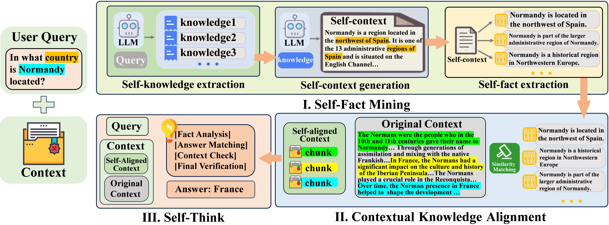
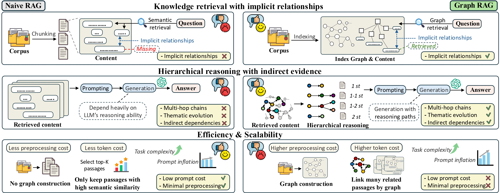
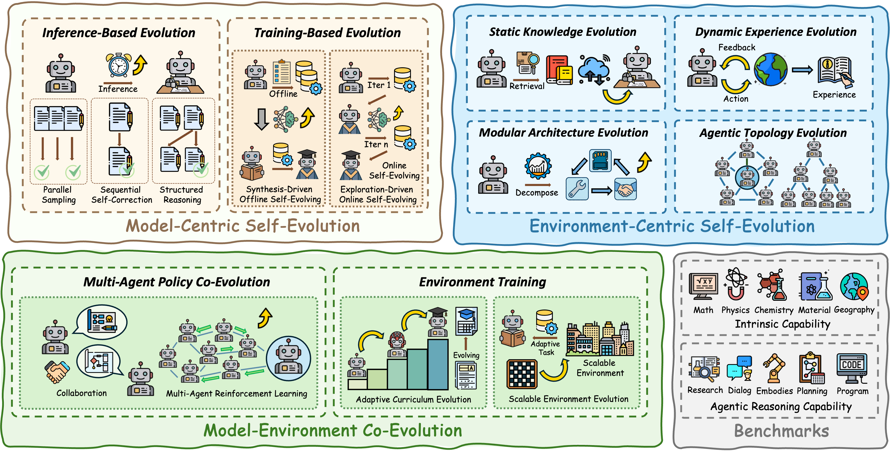

Zhishang Xiang🎓 M.S. studentXMU-DeepLIT, Xiamen University
|
|


Biography
I am now a first-year M.S. student at Xiamen University, Institute of Artificial Intelligence. My research interests include Natural Language Processing (NLP), Retrieval-Augmented Generation (RAG) and Agentic Systems.
News
- [2026.06] Our paper MemGraphRAG was accepted by KDD 2026.
- [2026.05] Our paper ZeroUnlearn was accepted by ICML 2026.
- [2026.04] Our paper LegalGraphRAG was accepted by ACL 2026.
- [2026.04] Our paper HEALing Entropy Collapse was accepted by ACL 2026.
- [2026.03] Our paper TTCS was accepted by ICLR 2026 Workshop.
- [2026.02] We release Graph-based Agent Memory, a taxonomy of graph-structured memory for agent systems.
- [2026.02] We release Self-Evolving Survey, a systematic survey of Self-Evolving Agents.
- [2026.01] Our paper GraphRAG-Bench was accepted by ICLR 2026.
- [2026.01] Our paper Augmenting Intra-Modal Understanding in MLLMs for Robust Multimodal Keyphrase Generation was accepted by AAAI 2026.
- [2025.08] FaithfulRAG received the ACL’25 SAC Highlight Award (top 0.57%).
- [2025.05] Our paper FaithfulRAG was accepted by ACL 2025.
Lead Projects
-

FaithfulRAG: Fact-Level Conflict Modeling for Context-Faithful Retrieval-Augmented Generation.
Qinggang Zhang†, Zhishang Xiang†, Yilin Xiao, Le Wang, Junhui Li, Xinrun Wang, Jinsong Su*.
The 63rd Annual Meeting of the Association for Computational Linguistics (ACL 2025 SAC-highlight).
[Paper] [Code] -


A Systematic Survey of Self-Evolving Agents: From Model-Centric to Environment-Driven Co-Evolution.
Zhishang Xiang†, Chengyi Yang†, Zerui Chen, Zhimin Wei, Yunbo Tang, Zongpei Teng, Zexi Peng, Zongxia Li, Chengsong Huang, Yicheng He, Chang Yang, Xinrun Wang, Xiao Huang, Qinggang Zhang*, Jinsong Su*.
Preprints (techrxiv.177203250.05832634).
[Paper] [Resources]
Publications
-
MemGraphRAG: Memory-based Multi-Agent System for Graph Retrieval-Augmented Generation.
Chuanjie Wu†, Zhishang Xiang†, Yunbo Tang, Zerui Chen, Qinggang Zhang*, Jinsong Su*.
KDD 2026. [Paper] [Code] -
ZeroUnlearn: Few-Shot Knowledge Unlearning in Large Language Models.
Yujie Lin†, Chengyi Yang†, Zhishang Xiang, Yiping Song, Jinsong Su*.
ICML 2026. [Paper] [Code] -
LegalGraphRAG: Multi-Agent Graph Retrieval-Augmented Generation for Reliable Legal Reasoning.
Zerui Chen, Qinggang Zhang*, Zhishang Xiang, Zhimin Wei, Linfeng Gao, Xiao Huang, Zhihong Zhang*, Jinsong Su*.
ACL 2026. [Paper] [Code] -
HEALing Entropy Collapse: Enhancing Exploration in Few-Shot RLVR via Hybrid-Domain Entropy Dynamics Alignment.
Zhanyu Liu, Qingguo Hu, Ante Wang, Chenqing Liu, Zhishang Xiang, Hui Li, Delai Qiu, Jinsong Su*.
ACL 2026. [Paper] -
Augmenting Intra-Modal Understanding in MLLMs for Robust Multimodal Keyphrase Generation.
Jiajun Cao, Qinggang Zhang, Yunbo Tang, Zhishang Xiang, Chang Yang, Jinsong Su*.
AAAI 2026. [Paper] -
TTCS: Test-Time Curriculum Synthesis for Self-Evolving.
Chengyi Yang, Zhishang Xiang, Yunbo Tang, Zongpei Teng, Chengsong Huang, Fei Long, Yuhan Liu, Jinsong Su*.
ICLR 2026 Workshop. [Paper] [Code] -
A Systematic Survey of Self-Evolving Agents: From Model-Centric to Environment-Driven Co-Evolution.
Zhishang Xiang†, Chengyi Yang†, Zerui Chen, Zhimin Wei, Yunbo Tang, Zongpei Teng, Zexi Peng, Zongxia Li, Chengsong Huang, Yicheng He, Chang Yang, Xinrun Wang, Xiao Huang, Qinggang Zhang*, Jinsong Su*.
Preprint. [Paper] [Resources] -
Graph-based Agent Memory: Taxonomy, Techniques, and Applications.
Chang Yang, Chuang Zhou, Yilin Xiao, Su Dong, Luyao Zhuang, Yujing Zhang, Zhu Wang, Zijin Hong, Zheng Yuan, Zhishang Xiang, Shengyuan Chen, Huachi Zhou, Qinggang Zhang*, Ninghao Liu, Jinsong Su*, Xinrun Wang, Yi Chang, Xiao Huang.
Preprint. [Paper] -
When to use Graphs in RAG: A Comprehensive Analysis for Graph Retrieval-Augmented Generation.
Zhishang Xiang†, Chuanjie Wu†, Qinggang Zhang*, Shengyuan Chen, Zijin Hong, Xiao Huang, Jinsong Su*.
ICLR 2026. [Paper] [Code] -
FaithfulRAG: Fact-Level Conflict Modeling for Context-Faithful Retrieval-Augmented Generation.
Qinggang Zhang†, Zhishang Xiang†, Yilin Xiao, Le Wang, Junhui Li, Xinrun Wang, Jinsong Su*.
ACL 2025 SAC-highlight. [Paper] [Code]
Awards and Honors
- ACL'25 SAC-highlight award
- Outstanding graduate award
- National scholarships in 2024
- The Second Class Prize in ASC student supercomputer challenge 2024
Academic Service
- Invited Reviewer: ACL (2026-), ICLR-Workshop (2026-);